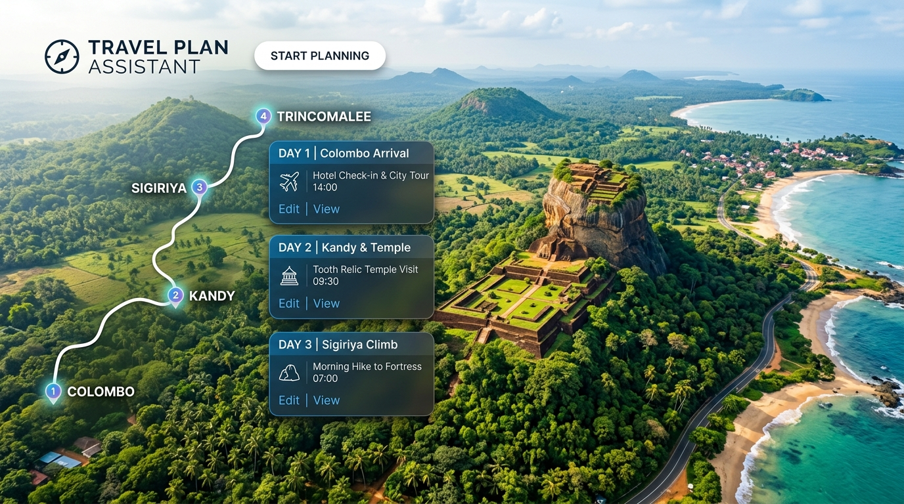

Department of Computer Engineering, Faculty of Engineering, University of Peradeniya
Modern leisure and business travel requires synthesizing dozens of fragmented data sources: researching reputable attractions, estimating vehicular transit times, calculating realistic visit durations, booking roadside dining and lodging, and adjusting to rigid daily schedules. For multi-destination exploration (such as touring Sri Lanka's historical, coastal, and hill-country circuits), travelers frequently suffer from itinerary fatigue, sub-optimal travel corridors, and unrealistic time expectations.
Travel Plan Assistant addresses this friction by providing an end-to-end, automated planning ecosystem. Rather than offering static point-to-point maps or uncurated listicles, the system leverages graph-based heuristic pathfinding to automatically generate balanced, multi-stop itineraries. Users define their origin, intended destinations, time budgets, and pacing preferences; the engine dynamically sequences the stops, calculates exact arrival and departure times, and seamlessly recommends verified hotels and restaurants precisely along the transit path.
Replaces 4+ disparate apps with an all-in-one synchronized planner.
Bidirectional route search with 3 distinct pacing & transit variants.
Proximity-filtered accommodations and dining without detour overhead.
Expands simultaneous forward and backward frontiers between origin and destination nodes, discovering optimal intermediate waypoints and generating 3 distinct styles: Shortest, Balanced, and Scenic.
Auto-calculates transit duration, arrival times, and departure timestamps per stop while enforcing overall day-time budgets (e.g., 08:30 to 20:00) and user-customized dwell times.
Integrates verified hotels and dining options directly adjacent to the travel corridor, displaying pricing tiers, ratings, opening hours, contact details, and web links.
Full customization UI allowing travelers to reorder stops, modify checkpoint visit times, save itineraries to multi-trip archives, and bookmark destinations in personalized wishlists.
Integrated interactive map visualizing route polylines, ordered stop pins, amenity badges, and interactive popups with direct navigation assistance.
Role-based admin control for managing destination catalogs and reviewing user access, accompanied by subscription tiers (Free vs. Premium Voyager) with seamless checkout.
Pre-loaded with verified spatial coordinates, district tags, imagery, and historical context across top travel regions:
The system follows a decoupled, three-tier Client-Server & Distributed Service Architecture. High-performance RESTful JSON APIs bridge the frontend React client with the Node.js business tier, MySQL spatial database, and external routing services.
At the heart of the Travel Plan Assistant is an algorithmic bidirectional expansion engine. Traditional single-source Dijkstra or TSP approaches often incur exponential search spaces when evaluating multi-criteria geographic networks. To generate intuitive travel sequences across regional nodes, the system applies bidirectional search with separate forward and backward visited sets to prevent false cycle detection:
| Route Style | Algorithmic Selection Strategy | Neighbor Distance Threshold | Primary Use Case |
|---|---|---|---|
| Shortest (Direct) | Selects closest neighbor (rank 0) along directional vector toward destination | distance ≤ 25 km |
Fastest transit, minimal fuel consumption, business travel |
| Balanced (Average) | Selects median-ranked candidate neighbor: index = floor((len - 1)/2) |
distance ≤ 25 km |
Balanced discovery, blending primary highways with popular towns |
| Scenic (Longest) | Selects farthest valid candidate neighbor: index = len - 1 |
distance ≤ 25 km |
Leisure exploration, coastal/mountain scenic routes, maximum attractions |
Directional filtering (directionalService.js) utilizes vector angle bounds between the current candidate and destination coordinates to guarantee forward geographic momentum and avoid backtrack loops.
Unlike naive radius searches that recommend hotels 30 km in the opposite direction, the hotelService and restaurantService utilize bounding corridors along the sequence of itinerary legs.
$ to $$$$), opening hours, user ratings, photo URLs, cuisine types, phone numbers, and official websites.
The MySQL relational schema leverages native spatial data types (POINT, lat, lng) for millisecond-fast distance calculations:
| Table Name | Primary Keys / Indices | Core Attributes | Purpose |
|---|---|---|---|
destinations |
destinationID (PK), Spatial (POINT) |
name, lat, lng, description, photos, rating, display_picture, type | Attraction repository across districts |
nearby_destinations |
Composite (source_id, destination_id) | distance_km, duration_mins, road_condition | Graph edges connecting nodes |
hotels |
hotel_id (PK), destination_id (FK) |
name, lat, lng, price_level, hotel_type, phone, website, photos | Accommodations along travel corridors |
restaurants |
restaurant_id (PK), destination_id (FK) |
name, lat, lng, cuisine_type, price_level, opening_hours | Dining spots along routes |
users |
user_id (PK), email (UNIQUE) |
name, password (bcrypt), role, status, is_subscribed, preferences | Authentication, RBAC & profile settings |
user_travel_sessions |
session_id (PK), user_id (FK) |
travel_plan (JSON), milestones, customDurations, created_at | Stateful persistence of customized plans |
wishlists |
wishlist_id (PK), UNIQUE(user_id, dest_id) |
destination_id, note, created_at | User destination bookmarks |
| Module / Feature | Implementation Details | Status |
|---|---|---|
| Algorithmic Path Engine | Bidirectional search supporting shortest, average, and scenic route styles | ✓ Completed |
| Corridor Stays & Dining | Hotel and restaurant catalog populated with geo-corridor queries | ✓ Completed |
| Interactive Itinerary Editor | Stop reordering, custom dwell durations, and schedule recalculation | ✓ Completed |
| Interactive Map View | Dynamic Leaflet map integration displaying route polylines and markers | ✓ Completed |
| User Auth & Saved Trips | JWT authentication, user status approval, wishlist bookmarking | ✓ Completed |
| Admin Dashboard | User management (approve/reject) and destination CRUD administration | ✓ Completed |
| Premium Subscriptions | Subscription flow, tier management, and subscriber-only features | ✓ Completed |
| Production Deployment | Frontend deployed on Vercel; Backend & DB on DigitalOcean VPS | ✓ Completed |
| Public Transit Integration | Sri Lanka Railway schedule overlay and multi-modal transit options | • Planned (Sprint 4) |
Testing prioritized both functional verification of graph heuristics and non-functional guarantees regarding API latency, session security, and data integrity:
Tested bidirectional expansion against 50+ origin-destination pairs. Validated frontier termination limits (max steps = 50), isolation of forward/backward visited sets, and verified that generated routes produce 0 disjoint sub-paths.
Benchmarked Google Distance Matrix API calls with fallback mock distance matrix. Enforced defensive timeouts and caching of repeated distance pairs in nearby_destinations table to minimize external quota consumption.
Verified JWT signature expiration, bcrypt salt rounds (10), protected route guards in React Router, and strict role segregation between standard travelers and system administrators.
Hosted on dedicated Ubuntu VPS to prevent serverless cold starts. Database query times for corridor queries maintained under 35ms; full 3-style itinerary generation completed in < 650ms.
The Travel Plan Assistant (MVP) successfully validates that graph-based bidirectional pathfinding combined with real-world geospatial intelligence can eliminate the friction of multi-stop travel planning. By unifying route optimization, dynamic scheduling, interactive stop modification, and corridor-based accommodation discovery into a cohesive platform, Team Phoenix has delivered a production-ready system with immediate practical value.